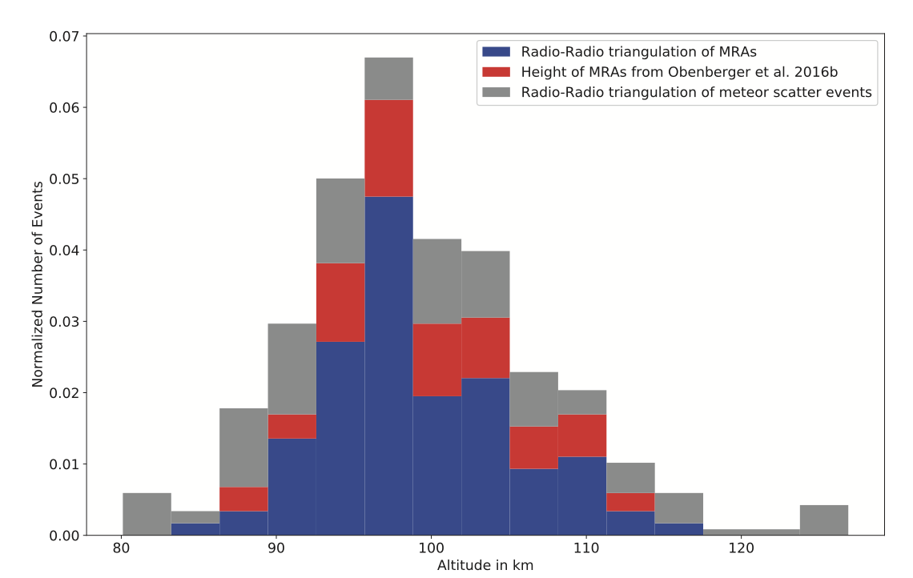

Introduction
Meteors occur when solid particles from space enters Earth's atmosphere at high velocities, burning up and producing light. For several decades, most of the meteor studies have been conducted using optical cameras and radars. Recent research has shown that meteors can be detected as small-scale explosions in the sky images from radio telescopes. This phenomenon is known as meteor radio afterglow.
In this project, I utilized the python-based image processing pipeline (discussed here ) to detect more than 100 meteors and study their properties. The pipeline utilized data collection, data cleaning, image processing (background subtraction, threshold-based detection, tracking of objects), classification of candidates, anomaly detection using images and time series analysis, and visualization of interesting new source candidates.
This project resulted in 3 scientific publications:
Data Collection
Collected around 170 TBs of sky images from 2 LWA telescopes (LWA1 and LWA-SV in New Mexico) and 8 TBs of raw time series data from OVRO-LWA telescope in California.
Methodologies to study the properties of meteors
- Building isotropic radiation model of meteors
- Built predictive models to understand the telescope sensitivity. Plot on the left shows the sensitivity of LWA telescope as function of elevation.
- Calculated the luminosity (brightness) of meteors detected in each LWA telescope and they follow an isotropic model (light travels uniformly in all directions). Plot on right shows the brightness measurements and expected model.
- Histogram distribution of altitude shows that meteors peak at a distance of 100 km heights. Figure below shows altitudes obtained through different techniques. 
- Monte Carlo simulations were conducted to randomly sample the properties of meteors to reproduce the isotropic model. A Kolmogorow-Smirnov (K-S) test was used to compare the distribution of actual values and sampled values from simulation.
- Developing the energy distribution model for meteors.
- 86 meteors were detected through the image processing pipeline and their spectra (energy as a function of frequency) were extracted from the images and they were fitted with power law and log-normal models. Spectra fitted with different models are shown below
- Akaike Information Criterion (AIC) score was used to compare the model scores.
- Plotted the distribution of different measured properties and they are shown below:
- Pearson correlation coefficient was calculated to understand the correlation between different measured properties. In the plots below, r = correlation coefficient and p = p-value of non-correlation.
- Principal component analysis was conducted to understand the hidden correlation between features of meteors. The top left plot below shows how much each feature contributes to the principal components. Top right shows the cumulative variance of the components. Bottom plot shows the biplot showing the strength and correlation between feature vectors.
- Creating high spatial resolution images of meteors
- Collected 8 TBs of time series data from OVRO-LWA telescope.
- Removed channels and antennas with outlier power levels. Fast Fourier transform(FFT) on the raw data yielded sky images which was fed into the python-based pipeline to detect meteors.
- Fourier domain corrections and deconvolutions of the raw data was used to improve the quality of the images.
- The higher resolution images were carried out to understand the emission mechanism. Figure below shows an image of meteor with low spatial resolution (left) and high resolution revealing small-scale features (right).
Conclusion
Statistical analysis of meteors with radio images enabled a greater understanding of the different meteor properties. Meteors play a great role in maintaining the ionospheric plasma density which is a key parameter for satellite and ground based communications.